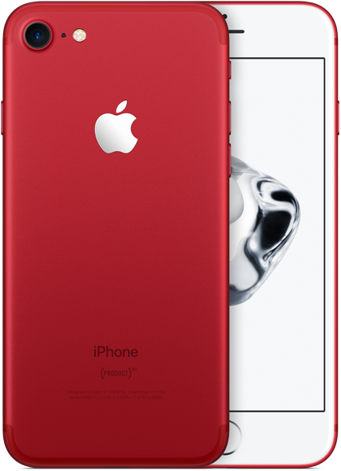

March 21 2017 Apple Press Release Coverage
Apple put out a press release on Monday, announcing a few minor new products. I’m here to cover what they did, and what I think of it. I’ll also say that I’m aggregating a lot from MacRumors, which is a website with Apple news and, in my opinion, is the fairest and has the highest journalistic integrity of the mainstream Apple news aggregators.
1. Now Lower-End iPad #
Apple released a new lower-end iPad. It’s replacing the iPad Air 2, which has become a bit outdated. Most notably, in my opinion, its price point has dropped from $399 to $329, making it Apple’s cheapest tablet offering. It’s got a few minor technical updates. It’s running the new(er) A9 chip, which is a substantial improvement from the previous A8X. However, it’s notable that it’s not using the A9X chips the iPad Pros use, and this is probably one of the main reasons for the price drop. It’s also got a brighter display, and is about an ounce heavier (32 grams). If you want an iPad, now is a good time to buy, thanks to the price drop.
2. (PRODUCT) RED iPhone 7 #
The iPhone now comes in a bright red. Some of the proceeds from this product goes to an organization that fights to prevent and spread awareness about AIDS in some African countries. If you’re considering buying an iPhone 7, consider buying this color to support a charity.

3. Clips App #
Apple is releasing a new app that allows users to make and edit videos, to easily and quickly make smooth, good-looking videos straight from your phone. This app looks pretty cool, and I’m really looking forward to playing with it once it’s released if it’s free.
4. Apple Watch Bands #
I don’t really care about these, but since it was part of the press release, I’ll mention it. Apple released a few new ones, as they do seasonally. I like the look of some of them, but will not be buying any.
In Closing #
This was kind of a simple, quick press release by Apple for a few minor things. However, they’re expected to hold an event in April to announce new iPad Pros, which will be interesting.